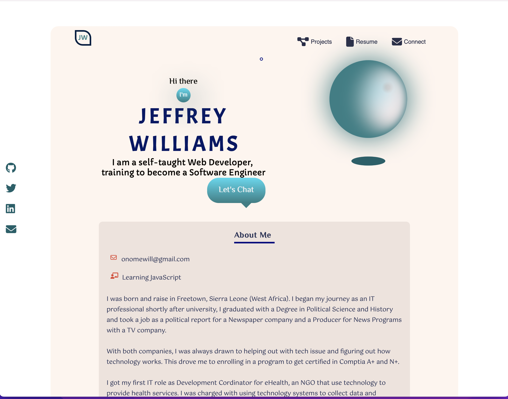

Hi there
I'm
J
E
F
F
R
E
Y
W
I
L
L
I
A
M
S
I am a self-taught Web Developer,
training to become a Software Engineer
Let's Chat
About Me

onomewill@gmail.com
Learning JavaScript
I was born and raise in Freetown, Sierra Leone (West Africa). I
began my journey as an IT professional shortly after university, I
graduated with a Degree in Political Science and History and took
a job as a political report for a Newspaper company and a Producer
for News Programs with a TV company.
With both companies, I was always drawn to helping out with tech
issue and figuring out how technology works. This drove me to
enrolling in a program to get certified in Comptia A+ and N+.
I got my first IT role as Development Cordinator for eHealth, an
NGO that use technology to provide health services. I was charged
with using technology systems to collect data and respond to cases
during the Ebola Epidemic in West Africa. Fast forward to moving
to the states and holding four IT Desktop Engineer roles, the
desire to build and develop things still burns in me, this has
drawn me to learning about Development/Programming."
Find out more about my professional journey
What I Have Learnt
Front End Development
Built websites for e-commerce, personal, business and learning purpose with modern styles and features. Employing HTML, CSS and JavaScript on VSCode application to build optimum sites.
What I Am Learning
Software Engineering
Improving on JavaScript, and learning C+ and other disciplines to improve on my programming skills.
Work So Far
Here are a few past design projects I've worked on.
Portfolio
Chef Ben Spice

KS Beauty

GrapeVine

Winstina Photography